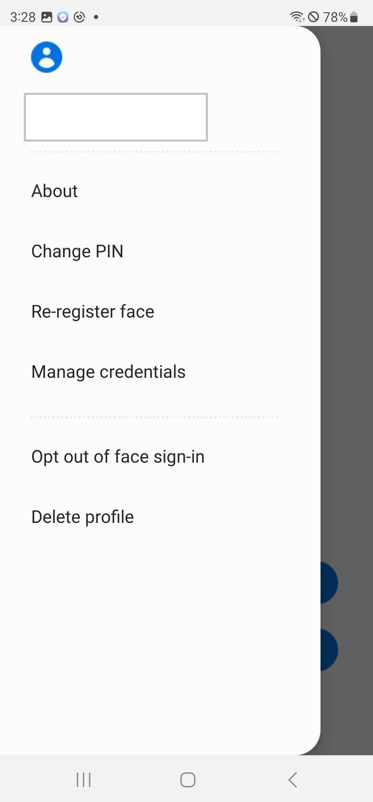
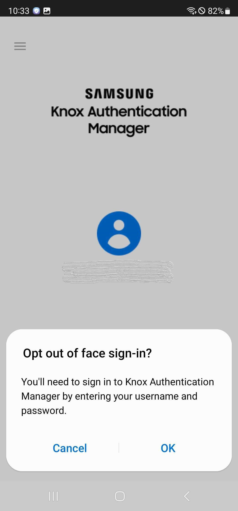
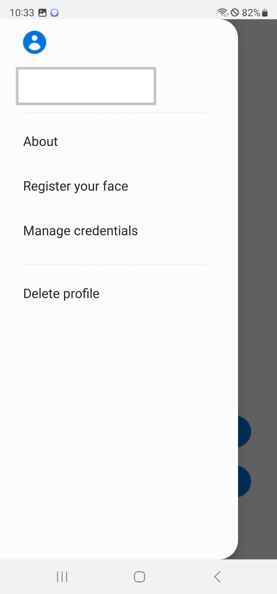

Change authentication methods
Last updated January 8th, 2025
As an IT admin, Knox Authentication Manager allows you to easily switch the Knox Authentication Manager authentication methods for device users in your UEM.
Switch authentication methods in the UEM console
Depending on the needs of your device fleet, you may want to switch between Manual, Face, and PIN+Face authentication methods. To switch authentication methods, you need to modify the managed configuration for Knox Authentication Manager in your UEM:
- On your UEM console, navigate to your managed configuration for Knox Authentication Manager.
- Set the Main login method policy to your desired authentication method. For more information, see Configure app policies. Click Save.
- Push the new configuration to your devices.
The next time users unlock a device or launch Knox Authentication Manager, a pop-up notifies them of the change.
If the new authentication method is set to:
- Manual — Users must now authenticate to Knox Authentication Manager using their password.
- PIN
- If Manual authentication was used previously, users must re-enroll using a PIN.
- If PIN+Face authentication was used previously, users no longer need to authenticate using facial recognition.
- PIN+Face
- If Manual authentication was used previously, users must re-enroll using a PIN and facial recognition. If they decline to have their face scanned, they can continue to authenticate manually.
- If PIN authentication was used previously, users must re-enroll by adding facial recognition to use alongside their PIN. If they decline to have their face scanned, they must authenticate manually.
Switch authentication methods in the app
To switch from Face authentication to Manual
If you no longer want to use your PIN and face to sign in to your Knox Authentication Manager account, you can switch to manual authentication with your enterprise credentials. To opt out of Face sign in:
-
Unlock your device or launch Knox Authentication Manager. Tap the menu on the top left of the Knox Authentication Manager home screen. Tap Opt out of face sign in.

-
Enter your enterprise password, tap Confirm, and then tap OK.

The next time you sign in, the app will prompt you to sign in with your enterprise credentials.
To switch from Manual authentication back to Face authentication
If you want to switch back to authentication with your face and PIN, you can opt back in to Face authentication.
-
Unlock your device or launch Knox Authentication Manager. Go to the menu and tap Register your face.

-
Enter your enterprise password and tap Confirm.
-
On the Knox Authentication Manager pop up, if you consent to let the app capture and store your biometric data, select the round checkbox and tap I Accept. Proceed through the prompts to register your face and PIN.
The next time you sign in, the app will prompt you to authenticate with your PIN and face.
On this page
Is this page helpful?